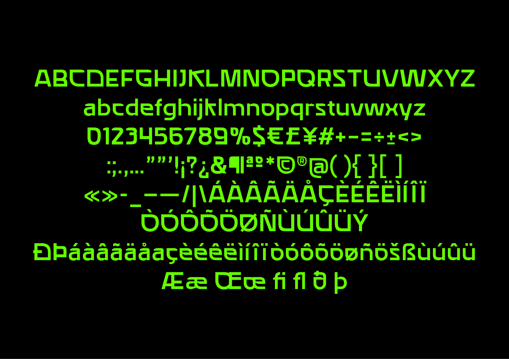
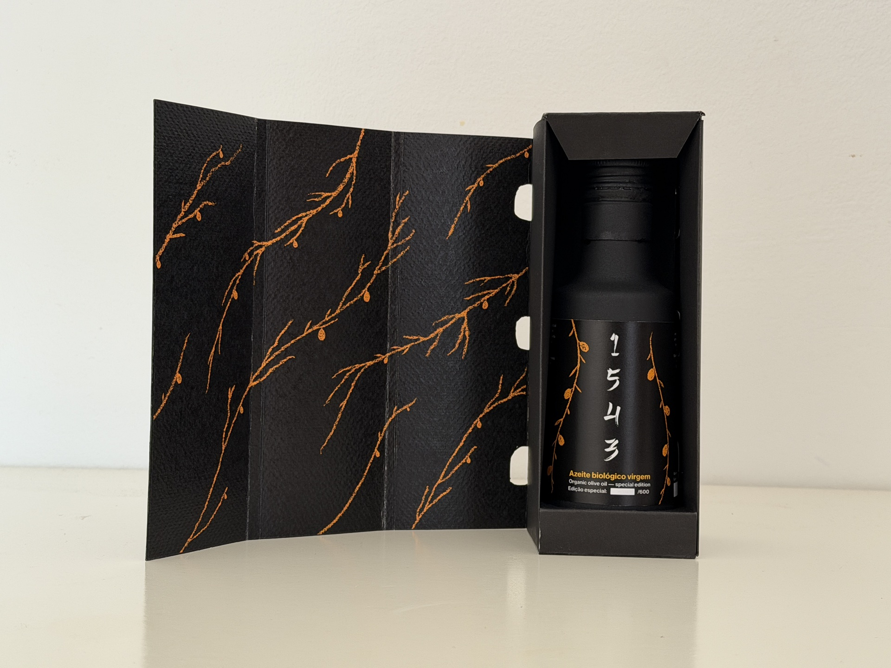
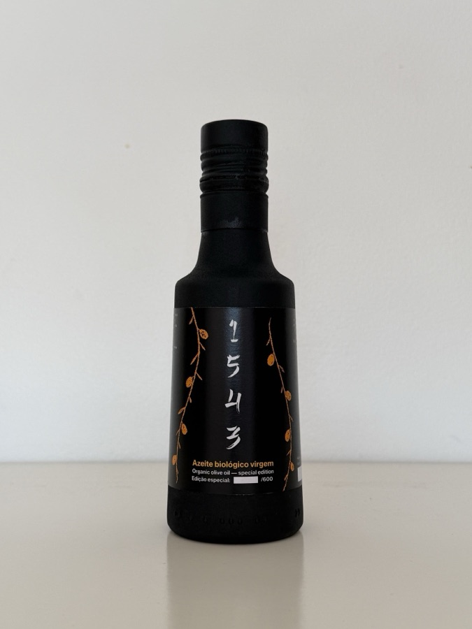

Visual identity, type, packaging and photography — five projects.



I started in Computer Engineering, realised it wasn't my place, and switched. No regrets. Now I'm finishing my degree in Graphic Design and Multimedia at ESAD.CR and building something that actually feels like mine.
I work across visual identity, branding, packaging, and typography. I'm drawn to design that solves real problems. I'm also genuinely interested in where design and technology meet, and that's the territory I want to keep pushing into.
Outside of the screen I play piano, do photography, and have done theatre and volunteering. I'm curious about most things and stubborn about the ones that matter. I take what I commit seriously. When I decide I'm going somewhere, I get there.
This portfolio is the work so far. There's more coming.
- 01Poliempreende
- 02Litet Snitt
- 031543
- 04Clube de Xadrez do Barreiro
- 05Photography
- essentialBase identity + 1-page landing, built
- completeFull identity + multi-section site + handoff
- customBeyond that — let's scope it